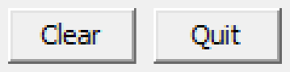
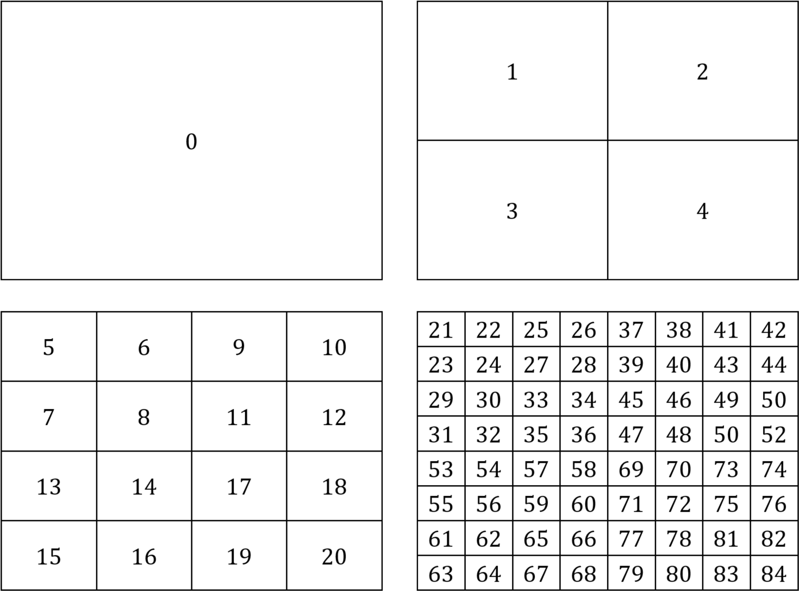

1. Introduction
This is a collision detection and response toy. It's driven by a dialog box so there is no keyboard input. It's intended to help you visualize what's going on in the in the Shapes Library by experimenting with various settings.

Fig. 1: Screen shot.
2. Controls

Fig. 2: The dialog box containing the controls.
The Collision Math Toy is controlled by the dialog box shown in Fig. 2, which is divided up into regions as described below.
2.1 Balls in Play
- Launched: The number of balls launched.
- Overlaps: The number of balls that have position identical to another ball. This will happen if two balls overlap by too much as a result of, say, inaccurate collision-response. Clearly code should be written to exclude this behavior, but it hasn't been implemented so that you can see that it happens.
- Strays: The number of balls that have tunneled through the outside walls. This will happen if a small ball is moving quickly and the number of motion and collision iterations is inadequate. Clearly code should be written to exclude this behavior, but it hasn't been implemented so that you can see that it happens.
2.2 Load
- FPS: The current number of animation frames per second.
- Load bar: A rough estimate of the amount of CPU time being used per animation frame as a fraction of the frame time.
2.3 Next Ball
- Size: The size of the next ball to be launched is controlled by a slider.
- Speed: The speed of the next ball to be launched is controlled by a slider.
2.4 Collision Detection and Response
- AABB tests per iteration: The number of AABB overlap tests performed per collision iteration.
- AABB tests per second: The number of AABB overlap tests performed per second.
- Full tests per second: The number of full tests performed per second. These are performed only when AABBs overlap.
- Collisions per second: The number of actual collisions per second, that is, the number of full tests that indicate an overlap.
2.5 Quadtree
See Section 5.3 for more details on quadtrees.
- Active: Toggle the use of quadtrees for space subdivision.
- Levels: Set the number of levels in the quadtree.
- Nodes: The number of nodes in an active quadtree.
- Leaves: The number of leaves in an active quadtree.
- Leaf area: The dimension of the rectangle covered by each quadtree leaf.
- Max shapes per leaf: The maximum over all leaves of the number of shapes in a leaf.
2.6 Iterations
- Motion: The number of motion iterations per animation frame.
- Collision: The number of collision iterations per motion iteration.
2.7 Other
- Mute: Toggle the collision sounds. You will want to check this box when there are more that a few balls in motion.
- Rotate: Toggle rotation of the kinematic shapes.
- Help: Show help from web page.
2.8 Show
- Hit points: Draw a colored dot at each point of impact of a ball with a static or kinematic shape. The dot color will be the same as the ball color.
- Tracks: Draw a track behind each ball.
- Tangents: Draw tangents to arcs and line segments.
- AABBs: Draw AABBs for the collision shapes. If quadtrees are active, then also draw the quadtree grid.
- Reticles: Draw a spinning reticle at each point of impact of a ball. The reticle color, and style will vary with the type of collision and its rotation speed will vary with the collision speed.
- Velocity: Draw an arrow on each ball in the direction of travel with size proportional to speed.
- Sectors: Draw arc sectors.
- Lights: Light up static and kinematic shapes briefly after each collision.
2.9 Launch
- Launch: The launch button will launch the number of balls entered into the edit box beside it. The balls will have pseudo-random colors and a size and speed determined by the sliders in the Next Ball region of the dialog box.
2.10 Buttons

- Clear: Delete all of the balls.
- Quit: Exit the program.
3. Building the Game
This code uses SAGE and the Shapes Library. Make sure that you have followed the SAGE Installation Instructions and the Shapes Library Build Instructions. Navigate to the folder 3. Collision Math Toy in your copy of the sage-physics repository. Run checkenv.bat to verify that you have set the environment variables correctly. Open Collision Math Toy.sln with Visual Studio and build the Release configuration. The Release executable file Collision Math Toy.exe will appear. Alternatively, run Build.bat to build both Release and Debug configurations.
4. Game Play
5. Code Breakdown
5.1 CObjectManager
5.1.1 CObjectManager::Move
5.1.2 CObjectManager::BroadPhase
5.1.3 CObjectManager::BroadPhase
5.2 Gates

Fig. 13: The clip used to cover up the line segment used in a gate.
Gates are implemented by CGate.
5.3 Quadtrees
void CObjectManager::BroadPhase(std::vector<CShape*> v){
for(auto i=v.begin(); i!=v.end(); i++)
for(auto j=next(i, 1); j!=v.end(); j++)
NarrowPhase(*i, *j);
} //BroadPhase
If there are \(n\) shapes in the parameter v, then the number of calls to NarrowPhase is:
\[
\sum_{i=1}^n \sum_{j=i+1}^n 1 = \sum_{i=1}^n (n-i)
= \sum_{i=1}^n n - \sum_{i=1}^n i
= n^2 - n(n+1)/2
= n(n-1)/2
= \theta (n^2).
\]
There are many space partitioning data structures and algorithms that can be used to speed up broad phase collision detection. A quadtree is one of them.
5.3.1 Definition

Fig. 5.3.1.1: A quadtree of depth 3.
A quadtree is a full 4-ary tree in which each node represents an AABB covering part of the game world. That is, it is a tree in which every non-leaf node has exactly 4 children and every leaf is at exactly depth \(d\) from the root, where the depth of a node is the minimum number of edges that must be traversed from the node to the root. For example, Fig. 5.3.1.1 shows the depth of the nodes at each level. The depth of a quadtree is the depth of its leaves, which is 3 in Fig. 5.3.1.1.
Fig. 5.3.1.2: A quadtree and its AABBs.
The root of a quadtree contains an AABB that contains the whole of the game world. The 4 children of a node subdivide the AABBs of their parent into 4 equal quadrants. For example, Fig. 2.3.1.2 shows the AABBs stored at the nodes of each level of the quadtree.
5.3.2 Quadtree Facts
The number of nodes in a quadtree of depth \(d\) is
\[
\sum_{i=0}^d 4^i = \frac{4^{d+1}-1}{3}.
\]
For example, the number of nodes in the quadtree shown in Fig. 5.3.1.1 is (summing by level) \(1 + 4 + 16 + 64 = 85\) and
\[
\sum_{i=0}^3 4^i = \frac{4^{4}-1}{3} = 255/3 = 85.
\]
The number of leaves in a quadtree of depth \(d\) is \(4^d\). For example, the number of leaves in the quadtree shown in Fig. 5.3.1.1 is \(4^3 = 64\).
5.3.3 Quadtree Data Structure

Fig. 5.3.3.1: The index of each node in the quadtree array.

Fig. 5.3.3.2: The index of each AABB in the quadtree array.
We can store an \(n\)-node quadtree in an array \(A[n]\) as follows. The root node is stored at \(A[0]\). The children of the node in \(A[i]\) are stored in nodes \(A[4i+1]\), \(A[4i+2]\), \(A[4i+3]\), and \(A[4i+4]\). The parent of the node in \(A[i]\) is in node \(A[\lfloor (i-1)/4 \rfloor]\). Fig. 5.3.3.1 shows the indices into \(A\) for the nodes of a depth 3, 85-node quadtree. Fig. 5.3.3.2 shows the AABBs labeled with the indices into \(A\) for the nodes of a depth 3, 85-node quadtree.

Fig. 5.3.3.3: The children of the green node at left are the green nodes at right.
For example, since \(4 \times 18 = 72\), the children of the node at \(A[18]\) are at nodes \(A[73]\), \(A[74]\), \(A[75]\), and \(A[76]\), and since \(\lfloor 72/4\rfloor = \lfloor 73/4\rfloor = \lfloor 74/4\rfloor = \lfloor 75/4\rfloor = 18\), the parent of nodes \(A[73]\), \(A[74]\), \(A[75]\), and \(A[76]\) is in \(A[18]\) (see Fig. 5.3.3.3).
5.3.4 Quadtree for Collision Detection

Fig. 5.3.4.1: A ball bearing in quadtree AABBs.

Fig. 5.3.4.2: A ball bearing in quadtree nodes.
6. What Next?
Next, take a look at the Pinball Game.